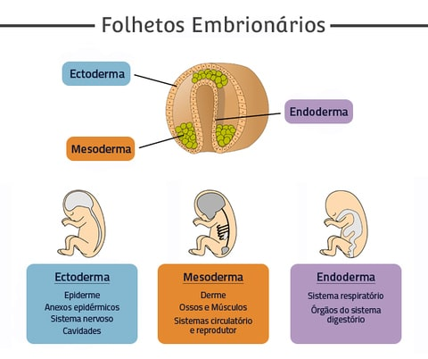
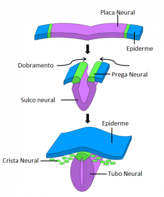
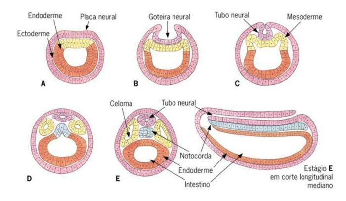
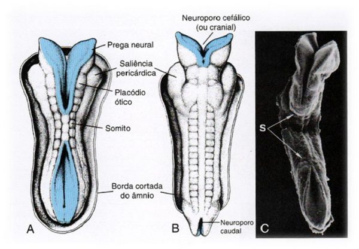
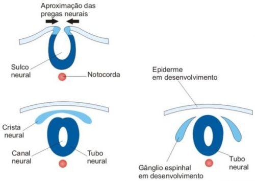
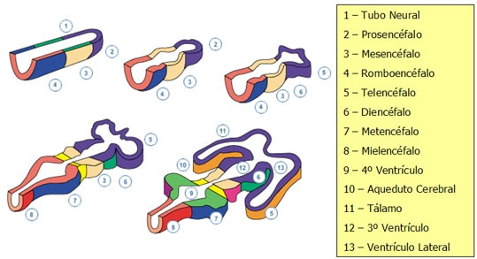

O sistema nervoso começa a sua formação a partir da quarta semana de vida, formando o tubo neural.
Esse processo é denominado de neurulação.
As células localizadas no ectoderma, sobre o notocorda, se espessam (caracterizando o neuroectoderma – origem do sistema nervoso).
Esse espessamento forma no ectoderma uma estrutura denominada de placa neural (que formará no desenvolvimento cerca de 100 bilhões de neurônios).
Posteriormente, a placa neural sofre uma invaginação, o sulco neural.
Com o desenvolvimento o sulco neural se transforma na goteira neural, com duas cristas neurais presas.
Ao final da terceira semana de vida a goteira neural se desprende do ectoderma, formando o tubo neural e, nas regiões laterais do tubo neural são formadas as cristas neurais.



Tubo neural
Apresenta uma luz em seu interior, o canal neural.
Suas extremidades são abertas, denominadas de neuróporo rostral e neuróporo caudal.
Ocorre depois de poucos dias o fechamento dos neuróporos (junto ao estabelecimento da circulação sanguínea para o tubo neural).
As paredes do tubo neural ao redor do canal neural se espessam, formando: duas lâminas alares (localizadas póstero-lateralmente); duas lâminas basais (localizadas ântero-lateralmente), separadas pelo sulco limitante; uma lâmina do teto (em locais específicos originará as células ependimárias); e uma lâmina do soalho.
O tubo neural dará origem a toda parte central do sistema nervoso (encéfalo e medula espinal).

Cristas neurais
São contínuas no sentido crânio-caudal do embrião.
Dividem-se rapidamente formando a parte periférica do sistema nervoso.

Dilatações do tubo neural
É extremamente importante nesse momento conservar a idéia do tubo neural, contendo uma luz (canal neural).
Dilatações ocorrem no tubo, consequentemente dilatando a luz naquela região.
As dilatações da luz do tubo neural constituirão os ventrículos encefálicos.
O tubo neural sofre três dilatações, produzindo as vesículas primordiais, sendo prosencéfalo, mesencéfalo e rombencéfalo.
Prosencéfalo
Do grego pro – antes, enkepalos – encéfalo: vesícula primordial que se dividirá em telencéfalo e diencéfalo.
Mesencéfalo
Do grego mesos – meio, enkepalos – encéfalo: vesícula primordial que pouco se diferencia, constituindo posteriormente o próprio mesencéfalo do tronco encefálico.

Rombencéfalo
Do grego rhombos – obtuso, enkepalos – encéfalo: a vesícula rombencefálica se diferencia posteriormente em metencéfalo e mieloencéfalo.
O metencéfalo originará a ponte e o cerebelo;
Enquanto que o mieloencéfalo origina o bulbo.
A luz do tubo neural localizada no prosencéfalo dilata-se formando, no telencéfalo, os ventrículos laterais e no diencéfalo o IIIº ventrículo.
No mesencéfalo a luz do tubo neural se estreita formando o aqueduto do mesencéfalo (comunicação entre o IIIº ventrículo e IVº ventrículo).
No rombencéfalo a dilatação da luz do tubo neural forma o IVº ventrículo.